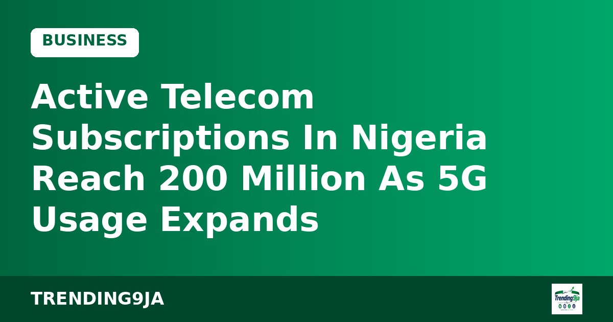

CBN Automates Sub-National Fiscal Data Collection Across 36 States and 774 LGAs
The Central Bank of Nigeria has digitalised its fiscal survey across states and local councils to boost data accuracy for economic policy making, Channels TV reports.

President Bola Tinubu has rolled out a guaranteed monthly minimum pension of ₦52,500 for 173,209 qualifying retirees under the Contributory Pension Scheme. The announcement concludes a 22-year holdup in executing the safety net outlined in pension legislation.
According to Vanguard, Senate President Godswill Akpabio represented Tinubu on Tuesday at the Presidential Pension Security Initiatives event held inside the State House Banquet Hall in Abuja. Alongside the minimum pension guarantee, the administration introduced the Pension Industry Healthcare Plan for Retirees, tagged PenCare, to provide free basic medical services to low-income senior citizens.
Speaking at the gathering, the Director-General of the National Pension Commission, Omolola Oloworaran, explained that the ₦52,500 baseline was determined through actuarial validation and will undergo regular reviews. She disclosed that 54 per cent of eligible beneficiaries are private-sector retirees, 34 per cent worked for the federal government, and 12 per cent served at state level, adding that more than ₦400bn sits in the Pension Protection Fund to finance the scheme.
Tinubu pointed out that the floor provision was first established in the Pension Reform Act of 2004 and retained in 2014, yet past leadership left it dormant. To address historical shortfalls, he stated that the government floated a ₦758bn bond to settle pension arrears and authorized an additional ₦32,000 monthly consequential adjustment for qualified federal pensioners.
The President also highlighted that subnational governments have cleared over ₦1tn from an inherited pension liability of ₦2tn. He connected this progress to increased fiscal headroom following petrol subsidy removal, citing World Bank findings that state revenues expanded by about 93 per cent in real terms between 2023 and 2025.
Sources: Vanguard
← More Business stories
The Central Bank of Nigeria has digitalised its fiscal survey across states and local councils to boost data accuracy for economic policy making, Channels TV reports.

Nigerian active telecom lines reached 200.3 million in September as 5G network share crossed 5 per cent, according to new data from the NCC.

Women in Management Africa has called for improved access to capital and markets for female entrepreneurs at its inaugural global economic forum in Lagos.
Nigeria's trending news, politics and entertainment, straight to your email.
By subscribing you agree to our Privacy Policy. Unsubscribe any time.